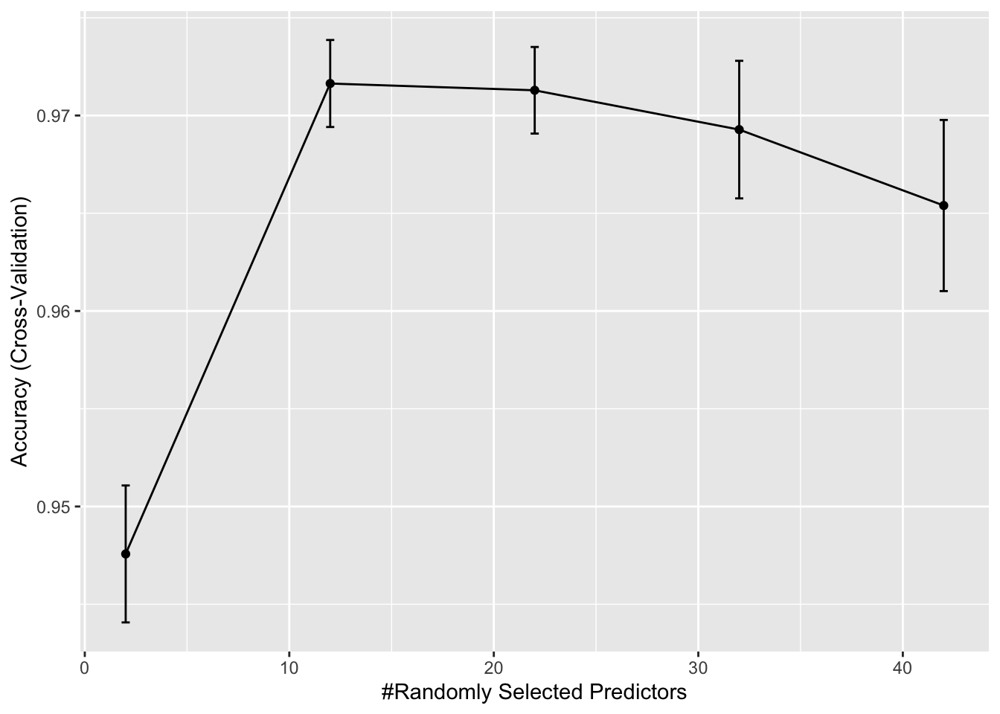
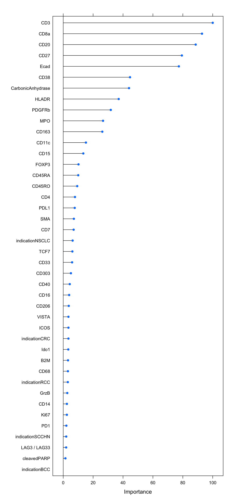
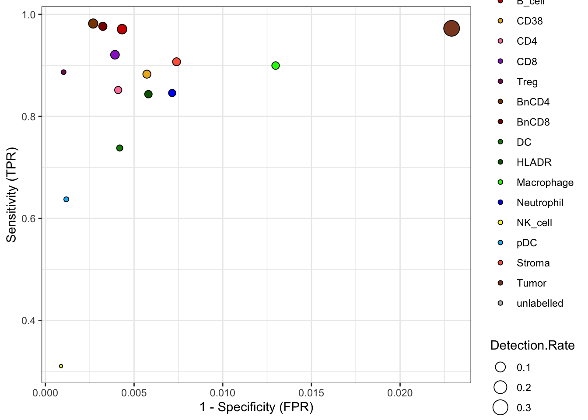
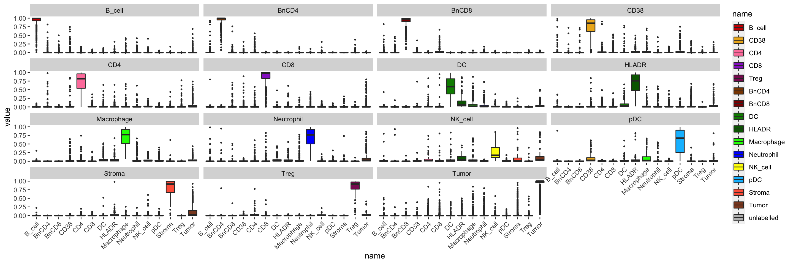

Last updated: 2022-05-05
Checks: 7 0
Knit directory: Analysis/
This reproducible R Markdown analysis was created with workflowr (version 1.7.0). The Checks tab describes the reproducibility checks that were applied when the results were created. The Past versions tab lists the development history.
Great! Since the R Markdown file has been committed to the Git repository, you know the exact version of the code that produced these results.
Great job! The global environment was empty. Objects defined in the global environment can affect the analysis in your R Markdown file in unknown ways. For reproduciblity it’s best to always run the code in an empty environment.
The command set.seed(20220321) was run prior to running
the code in the R Markdown file. Setting a seed ensures that any results
that rely on randomness, e.g. subsampling or permutations, are
reproducible.
Great job! Recording the operating system, R version, and package versions is critical for reproducibility.
Nice! There were no cached chunks for this analysis, so you can be confident that you successfully produced the results during this run.
Great job! Using relative paths to the files within your workflowr project makes it easier to run your code on other machines.
Great! You are using Git for version control. Tracking code development and connecting the code version to the results is critical for reproducibility.
The results in this page were generated with repository version 9fbdaac. See the Past versions tab to see a history of the changes made to the R Markdown and HTML files.
Note that you need to be careful to ensure that all relevant files for
the analysis have been committed to Git prior to generating the results
(you can use wflow_publish or
wflow_git_commit). workflowr only checks the R Markdown
file, but you know if there are other scripts or data files that it
depends on. Below is the status of the Git repository when the results
were generated:
Ignored files:
Ignored: .DS_Store
Ignored: IMC/.DS_Store
Ignored: IMC/Analysis/.DS_Store
Ignored: IMC/Analysis/.Rproj.user/
Ignored: IMC/Analysis/analysis/.DS_Store
Ignored: comparisons/.DS_Store
Ignored: comparisons/.Rproj.user/
Ignored: comparisons/analysis/.DS_Store
Ignored: mIF/.DS_Store
Ignored: mIF/Analysis/.Rproj.user/
Ignored: mIF/Analysis/analysis/.DS_Store
Unstaged changes:
Modified: IMC/Analysis/analysis/01_read_data.Rmd
Modified: IMC/Analysis/analysis/02_spillover_correction.Rmd
Modified: IMC/Analysis/analysis/03_quality_control.Rmd
Modified: IMC/Analysis/analysis/07_predict_celltypes.Rmd
Note that any generated files, e.g. HTML, png, CSS, etc., are not included in this status report because it is ok for generated content to have uncommitted changes.
These are the previous versions of the repository in which changes were
made to the R Markdown
(IMC/Analysis/analysis/06_train_classifier.Rmd) and HTML
(IMC/Analysis/docs/06_train_classifier.html) files. If
you’ve configured a remote Git repository (see
?wflow_git_remote), click on the hyperlinks in the table
below to view the files as they were in that past version.
| File | Version | Author | Date | Message |
|---|---|---|---|---|
| Rmd | c22d4e1 | nilseling | 2022-04-29 | Added more projects |
In this script, we will train a random forest classifier.
First, we will read in the SingleCellExperiment object and load all libraries.
library(caret)
library(scater)
library(tidyverse)
library(dittoSeq)
library(viridis)
library(doParallel)
sce <- readRDS("/Volumes/immucan_volume/processed_data/Panel_1/2022_WORKFLOW/IMC/Rout/sce.rds")After quality control, we will now use a random forest classifier to classify the remaining cells in the dataset. First, we will split the dataset into labelled and unlabelled data.
lab_sce <- sce[,sce$cell_labels != "unlabelled"]
unlab_sce <- sce[,sce$cell_labels == "unlabelled"]We will split the labelled data based on their cell-types.
We will first split the labelled data into training and test (validation) data at a ratio of 75/25 train/test.
set.seed(1234)
trainIndex <- createDataPartition(factor(lab_sce$cell_labels), p = 0.75)
train_sce <- lab_sce[,trainIndex$Resample1]
test_sce <- lab_sce[,-trainIndex$Resample1]Here, we will first use a 5-fold cross-validation by partitioning the
data randomly across the full dataset. We will also use parallel
processing for time reasons. For the randomForrest
classifier, we need to tune the mtry parameter - the number
of variables sampled for each split. We will also add the indication as
dummy variable.
# Define seeds for parallel processing
# Per iteration, we evaluate 10 models while tuning mtry
set.seed(222)
seeds <- vector(mode = "list", length = 6)
for (i in 1:5) {
seeds[[i]] <- sample(5000, 5)
}
seeds[[6]] <- sample(5000, 1)
fitControl <- trainControl(method = "cv",
number = 5,
seeds = seeds)
cl <- makePSOCKcluster(6, setup_strategy = "sequential")
registerDoParallel(cl)
# Add dummy variables
cur_mat <- t(assay(train_sce, "exprs")[!grepl("DNA|Histone", rownames(train_sce)),])
dummies <- dummyVars(sample_id ~ indication, data = colData(train_sce))
all_dummies <- predict(dummies, newdata = colData(train_sce))
cur_mat <- cbind(cur_mat, all_dummies)
set.seed(1234)
rffit <- train(x = cur_mat,
y = factor(train_sce$cell_labels),
method = "rf", ntree = 1000,
tuneLength = 5,
trControl = fitControl)
stopCluster(cl)
rffitRandom Forest
20622 samples
42 predictor
15 classes: 'B_cell', 'BnCD4', 'BnCD8', 'CD38', 'CD4', 'CD8', 'DC', 'HLADR', 'Macrophage', 'Neutrophil', 'NK_cell', 'pDC', 'Stroma', 'Treg', 'Tumor'
No pre-processing
Resampling: Cross-Validated (5 fold)
Summary of sample sizes: 16498, 16498, 16495, 16500, 16497
Resampling results across tuning parameters:
mtry Accuracy Kappa
2 0.8875955 0.8646060
12 0.9144112 0.8975064
22 0.9162546 0.8997427
32 0.9164488 0.8999612
42 0.9105327 0.8928576
Accuracy was used to select the optimal model using the largest value.
The final value used for the model was mtry = 32.saveRDS(rffit,file = "/Volumes/immucan_volume/processed_data/Panel_1/2022_WORKFLOW/IMC/Rout/rf_classifier.rds")We will now have a look at the accuracy measures over iterations. The
only parameter that has been tuned is mtry.
ggplot(rffit) +
geom_errorbar(data = rffit$results,
aes(ymin = Accuracy - AccuracySD,
ymax = Accuracy + AccuracySD),
width = 0.4)
We can also compute the confusion matrix:
confusionMatrix(rffit)Cross-Validated (5 fold) Confusion Matrix
(entries are percentual average cell counts across resamples)
Reference
Prediction B_cell BnCD4 BnCD8 CD38 CD4 CD8 DC HLADR Macrophage Neutrophil
B_cell 8.7 0.1 0.0 0.1 0.0 0.0 0.0 0.0 0.0 0.1
BnCD4 0.1 8.0 0.0 0.1 0.2 0.0 0.0 0.0 0.0 0.0
BnCD8 0.1 0.0 5.5 0.0 0.0 0.2 0.0 0.0 0.0 0.0
CD38 0.0 0.0 0.0 5.3 0.2 0.1 0.0 0.2 0.2 0.0
CD4 0.0 0.0 0.0 0.0 3.3 0.1 0.1 0.1 0.1 0.0
CD8 0.0 0.0 0.0 0.1 0.0 6.6 0.0 0.0 0.0 0.1
DC 0.0 0.0 0.0 0.0 0.0 0.0 2.0 0.1 0.1 0.0
HLADR 0.0 0.0 0.0 0.0 0.1 0.0 0.2 3.8 0.0 0.0
Macrophage 0.0 0.0 0.0 0.1 0.1 0.0 0.2 0.1 4.0 0.1
Neutrophil 0.0 0.0 0.0 0.0 0.1 0.0 0.1 0.1 0.1 3.6
NK_cell 0.0 0.0 0.0 0.0 0.0 0.0 0.0 0.0 0.0 0.0
pDC 0.0 0.0 0.0 0.1 0.0 0.0 0.0 0.0 0.0 0.0
Stroma 0.0 0.0 0.0 0.0 0.0 0.0 0.0 0.1 0.0 0.0
Treg 0.0 0.0 0.0 0.0 0.0 0.0 0.0 0.0 0.0 0.0
Tumor 0.1 0.0 0.0 0.0 0.3 0.2 0.1 0.1 0.0 0.2
Reference
Prediction NK_cell pDC Stroma Treg Tumor
B_cell 0.0 0.0 0.0 0.0 0.1
BnCD4 0.0 0.0 0.0 0.0 0.0
BnCD8 0.0 0.0 0.0 0.0 0.0
CD38 0.0 0.1 0.0 0.0 0.0
CD4 0.1 0.0 0.0 0.1 0.1
CD8 0.1 0.0 0.0 0.0 0.1
DC 0.1 0.0 0.0 0.0 0.0
HLADR 0.1 0.1 0.1 0.0 0.1
Macrophage 0.2 0.1 0.0 0.0 0.1
Neutrophil 0.0 0.0 0.0 0.0 0.2
NK_cell 0.2 0.0 0.0 0.0 0.0
pDC 0.0 0.9 0.0 0.0 0.0
Stroma 0.0 0.0 4.8 0.0 0.2
Treg 0.0 0.0 0.0 0.6 0.0
Tumor 0.1 0.0 0.5 0.0 34.1
Accuracy (average) : 0.9164We will also look at the variable importance.
cur_varImp <- varImp(rffit)
plot(cur_varImp)
Finally, we will validate the model using the test data.
# Add dummy variables
cur_mat <- t(assay(test_sce, "exprs")[!grepl("DNA|Histone", rownames(test_sce)),])
dummies <- dummyVars(sample_id ~ indication, data = colData(test_sce))
all_dummies <- predict(dummies, newdata = colData(test_sce))
cur_mat <- cbind(cur_mat, all_dummies)
cur_pred <- predict(rffit,
newdata = cur_mat)
cm <- confusionMatrix(data = cur_pred,
reference = factor(test_sce$cell_labels),
mode = "everything")
cmConfusion Matrix and Statistics
Reference
Prediction B_cell BnCD4 BnCD8 CD38 CD4 CD8 DC HLADR Macrophage Neutrophil
B_cell 604 6 4 5 0 1 1 2 0 3
BnCD4 3 549 1 2 6 0 0 0 0 2
BnCD8 1 2 376 6 0 7 0 0 0 3
CD38 6 0 1 354 9 4 1 4 7 0
CD4 0 2 0 2 247 3 4 2 2 4
CD8 0 0 3 3 0 454 4 1 0 5
DC 0 0 0 5 3 1 138 6 5 0
HLADR 0 0 0 4 2 3 11 275 3 3
Macrophage 3 0 0 9 5 0 22 4 287 12
Neutrophil 1 0 0 1 2 0 4 8 13 247
NK_cell 0 0 0 0 0 0 0 3 0 0
pDC 0 0 0 7 0 0 0 0 1 0
Stroma 0 0 0 2 1 1 0 13 1 1
Treg 0 0 0 0 4 0 0 0 0 0
Tumor 4 0 0 1 11 19 2 8 0 12
Reference
Prediction NK_cell pDC Stroma Treg Tumor
B_cell 2 1 0 0 2
BnCD4 2 0 0 1 0
BnCD8 0 0 0 1 1
CD38 0 4 0 0 1
CD4 3 0 0 1 4
CD8 3 0 0 1 5
DC 4 2 1 0 1
HLADR 3 4 1 0 4
Macrophage 9 11 0 0 10
Neutrophil 0 6 0 0 12
NK_cell 18 0 2 0 1
pDC 0 58 0 0 0
Stroma 5 1 342 0 23
Treg 1 0 0 47 2
Tumor 8 4 31 2 2348
Overall Statistics
Accuracy : 0.9238
95% CI : (0.9173, 0.93)
No Information Rate : 0.3515
P-Value [Acc > NIR] : < 2.2e-16
Kappa : 0.9089
Mcnemar's Test P-Value : NA
Statistics by Class:
Class: B_cell Class: BnCD4 Class: BnCD8 Class: CD38
Sensitivity 0.97106 0.98211 0.97662 0.88279
Specificity 0.99568 0.99731 0.99676 0.99428
Pos Pred Value 0.95721 0.96996 0.94710 0.90537
Neg Pred Value 0.99711 0.99841 0.99861 0.99274
Precision 0.95721 0.96996 0.94710 0.90537
Recall 0.97106 0.98211 0.97662 0.88279
F1 0.96409 0.97600 0.96164 0.89394
Prevalence 0.09058 0.08140 0.05607 0.05840
Detection Rate 0.08796 0.07995 0.05475 0.05155
Detection Prevalence 0.09189 0.08242 0.05781 0.05694
Balanced Accuracy 0.98337 0.98971 0.98669 0.93854
Class: CD4 Class: CD8 Class: DC Class: HLADR
Sensitivity 0.85172 0.92089 0.73797 0.84356
Specificity 0.99589 0.99608 0.99581 0.99419
Pos Pred Value 0.90146 0.94781 0.83133 0.87859
Neg Pred Value 0.99348 0.99389 0.99269 0.99222
Precision 0.90146 0.94781 0.83133 0.87859
Recall 0.85172 0.92089 0.73797 0.84356
F1 0.87589 0.93416 0.78187 0.86072
Prevalence 0.04223 0.07179 0.02723 0.04747
Detection Rate 0.03597 0.06611 0.02010 0.04005
Detection Prevalence 0.03990 0.06975 0.02417 0.04558
Balanced Accuracy 0.92381 0.95849 0.86689 0.91887
Class: Macrophage Class: Neutrophil Class: NK_cell
Sensitivity 0.89969 0.84589 0.310345
Specificity 0.98702 0.99285 0.999119
Pos Pred Value 0.77151 0.84014 0.750000
Neg Pred Value 0.99507 0.99315 0.994155
Precision 0.77151 0.84014 0.750000
Recall 0.89969 0.84589 0.310345
F1 0.83068 0.84300 0.439024
Prevalence 0.04645 0.04252 0.008446
Detection Rate 0.04179 0.03597 0.002621
Detection Prevalence 0.05417 0.04281 0.003495
Balanced Accuracy 0.94335 0.91937 0.654732
Class: pDC Class: Stroma Class: Treg Class: Tumor
Sensitivity 0.637363 0.90716 0.886792 0.9727
Specificity 0.998819 0.99260 0.998973 0.9771
Pos Pred Value 0.878788 0.87692 0.870370 0.9584
Neg Pred Value 0.995148 0.99460 0.999119 0.9851
Precision 0.878788 0.87692 0.870370 0.9584
Recall 0.637363 0.90716 0.886792 0.9727
F1 0.738854 0.89179 0.878505 0.9655
Prevalence 0.013252 0.05490 0.007718 0.3515
Detection Rate 0.008446 0.04980 0.006844 0.3419
Detection Prevalence 0.009611 0.05679 0.007864 0.3568
Balanced Accuracy 0.818091 0.94988 0.942883 0.9749data.frame(cm$byClass) %>%
mutate(class = sub("Class: ", "", rownames(cm$byClass))) %>%
ggplot() +
geom_point(aes(1 - Specificity, Sensitivity,
size = Detection.Rate,
fill = class),
shape = 21) +
scale_fill_manual(values = metadata(sce)$colour_vectors$cell_type) +
theme_bw() +
ylab("Sensitivity (TPR)") +
xlab("1 - Specificity (FPR)")
We will also observe the distribution of classification probabilities per image and class:
cur_pred <- predict(rffit,
newdata = cur_mat,
type = "prob")
cur_pred$truth <- factor(test_sce$cell_labels)
cur_pred %>%
pivot_longer(cols = B_cell:Tumor) %>%
ggplot() +
geom_boxplot(aes(x = name, y = value, fill = name), outlier.size = 0.5) +
facet_wrap(. ~ truth) +
scale_fill_manual(values = metadata(sce)$colour_vectors$cell_type) +
theme(panel.background = element_blank(),
axis.text.x = element_text(angle = 45, hjust = 1))
sessionInfo()R version 4.1.3 (2022-03-10)
Platform: x86_64-apple-darwin17.0 (64-bit)
Running under: macOS Catalina 10.15.7
Matrix products: default
BLAS: /Library/Frameworks/R.framework/Versions/4.1/Resources/lib/libRblas.0.dylib
LAPACK: /Library/Frameworks/R.framework/Versions/4.1/Resources/lib/libRlapack.dylib
locale:
[1] en_US.UTF-8/en_US.UTF-8/en_US.UTF-8/C/en_US.UTF-8/en_US.UTF-8
attached base packages:
[1] parallel stats4 stats graphics grDevices utils datasets
[8] methods base
other attached packages:
[1] doParallel_1.0.17 iterators_1.0.14
[3] foreach_1.5.2 viridis_0.6.2
[5] viridisLite_0.4.0 dittoSeq_1.7.0
[7] forcats_0.5.1 stringr_1.4.0
[9] dplyr_1.0.9 purrr_0.3.4
[11] readr_2.1.2 tidyr_1.2.0
[13] tibble_3.1.6 tidyverse_1.3.1
[15] scater_1.22.0 scuttle_1.4.0
[17] SingleCellExperiment_1.16.0 SummarizedExperiment_1.24.0
[19] Biobase_2.54.0 GenomicRanges_1.46.1
[21] GenomeInfoDb_1.30.1 IRanges_2.28.0
[23] S4Vectors_0.32.4 BiocGenerics_0.40.0
[25] MatrixGenerics_1.6.0 matrixStats_0.62.0
[27] caret_6.0-92 lattice_0.20-45
[29] ggplot2_3.3.5 workflowr_1.7.0
loaded via a namespace (and not attached):
[1] readxl_1.4.0 backports_1.4.1
[3] plyr_1.8.7 splines_4.1.3
[5] BiocParallel_1.28.3 listenv_0.8.0
[7] digest_0.6.29 htmltools_0.5.2
[9] fansi_1.0.3 magrittr_2.0.3
[11] ScaledMatrix_1.2.0 tzdb_0.3.0
[13] recipes_0.2.0 globals_0.14.0
[15] modelr_0.1.8 gower_1.0.0
[17] hardhat_0.2.0 colorspace_2.0-3
[19] rvest_1.0.2 ggrepel_0.9.1
[21] haven_2.5.0 xfun_0.30
[23] callr_3.7.0 crayon_1.5.1
[25] RCurl_1.98-1.6 jsonlite_1.8.0
[27] survival_3.3-1 glue_1.6.2
[29] gtable_0.3.0 ipred_0.9-12
[31] zlibbioc_1.40.0 XVector_0.34.0
[33] DelayedArray_0.20.0 BiocSingular_1.10.0
[35] future.apply_1.9.0 scales_1.2.0
[37] pheatmap_1.0.12 DBI_1.1.2
[39] Rcpp_1.0.8.3 proxy_0.4-26
[41] rsvd_1.0.5 lava_1.6.10
[43] prodlim_2019.11.13 httr_1.4.2
[45] RColorBrewer_1.1-3 ellipsis_0.3.2
[47] farver_2.1.0 pkgconfig_2.0.3
[49] nnet_7.3-17 sass_0.4.1
[51] dbplyr_2.1.1 utf8_1.2.2
[53] labeling_0.4.2 tidyselect_1.1.2
[55] rlang_1.0.2 reshape2_1.4.4
[57] later_1.3.0 munsell_0.5.0
[59] cellranger_1.1.0 tools_4.1.3
[61] cli_3.3.0 generics_0.1.2
[63] ggridges_0.5.3 broom_0.8.0
[65] evaluate_0.15 fastmap_1.1.0
[67] yaml_2.3.5 ModelMetrics_1.2.2.2
[69] processx_3.5.3 knitr_1.39
[71] fs_1.5.2 randomForest_4.7-1
[73] future_1.25.0 nlme_3.1-157
[75] sparseMatrixStats_1.6.0 whisker_0.4
[77] xml2_1.3.3 compiler_4.1.3
[79] rstudioapi_0.13 beeswarm_0.4.0
[81] e1071_1.7-9 reprex_2.0.1
[83] bslib_0.3.1 stringi_1.7.6
[85] highr_0.9 ps_1.7.0
[87] Matrix_1.4-1 vctrs_0.4.1
[89] pillar_1.7.0 lifecycle_1.0.1
[91] jquerylib_0.1.4 BiocNeighbors_1.12.0
[93] cowplot_1.1.1 data.table_1.14.2
[95] bitops_1.0-7 irlba_2.3.5
[97] httpuv_1.6.5 R6_2.5.1
[99] promises_1.2.0.1 gridExtra_2.3
[101] vipor_0.4.5 parallelly_1.31.1
[103] codetools_0.2-18 MASS_7.3-55
[105] assertthat_0.2.1 rprojroot_2.0.3
[107] withr_2.5.0 GenomeInfoDbData_1.2.7
[109] hms_1.1.1 grid_4.1.3
[111] rpart_4.1.16 beachmat_2.10.0
[113] timeDate_3043.102 class_7.3-20
[115] rmarkdown_2.14 DelayedMatrixStats_1.16.0
[117] git2r_0.30.1 getPass_0.2-2
[119] pROC_1.18.0 lubridate_1.8.0
[121] ggbeeswarm_0.6.0